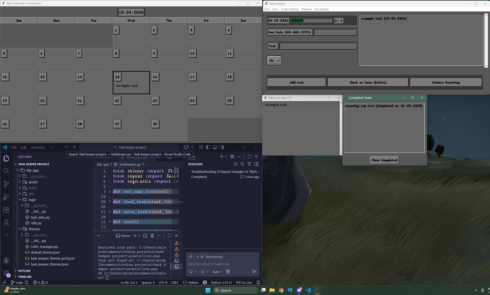

This is a project that I worked on before starting college, I started with the main window without the experience bar, as I wanted to have an application to keep tasks in a form factor that I prefered. Due date if applicable, then the name of the task, and whether it re occoured, and if that re occourence is daily, weekly or monthly.